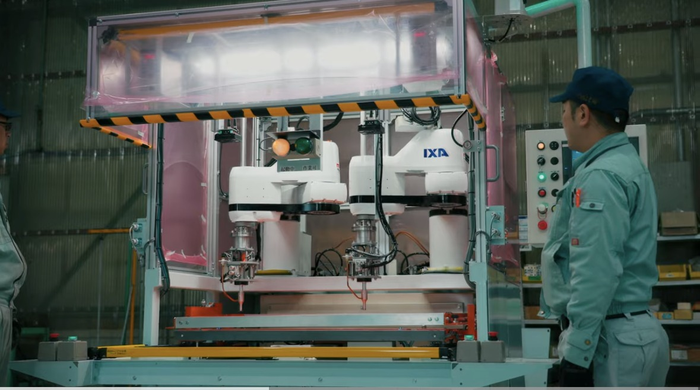
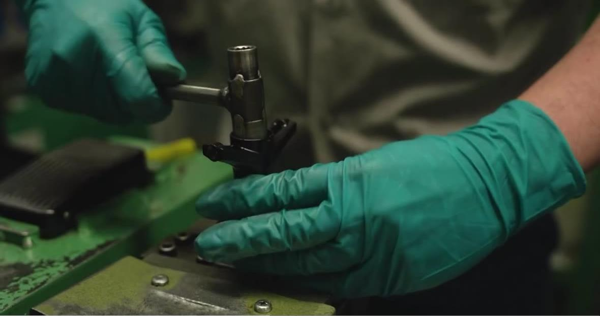
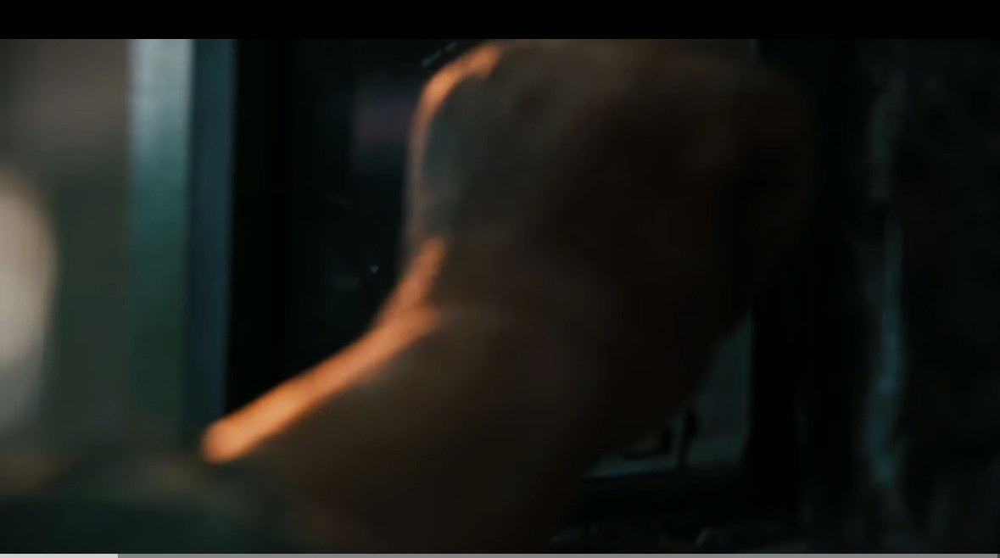

BROOKLYN MUSEUM ／ 向島工房
動画 8本
企画・構成・絵コンテ
Eight Films / Plan, Structure, Storyboard
2026年9月3日 第4版
株式会社B supply 宮下 詩織
テロップはすべて日本語と英語の二本立てで記載しています。
1 / 10
目 次 C O N T E N T S
8本の動画
1〜5本目と7本目は参考動画があり、絵コンテの写真もそこから抜いています。いただいた録画は2倍速再生だったため、参考動画の秒数はすべて1倍速に換算した値です（録画は動画の一部を切り取ったものなので、動画そのものの全長とは異なる場合があります）。6本目は参考動画をいただき次第、内容を確定します。
| # | タイトル | 尺・本数 | 届ける相手 | 参考動画 | |
|---|
| 1 | 今日の服に、合う色。
A Colour for Every Outfit | 20秒 ×1 | 新規・リピーター | Link（innovator SWEDEN） | p.3 |
| 2 | この道、20年。
Twenty Years | 40秒 ×1 | 新規（まだ知らない人） | Link ＋ Link（コバ塗り・477万再生） | p.4 |
| 3 | The Making of the Royale M Tote
ロワイヤルMトートの作りかた | 28秒 ×1 | メディア関係者・ハイエンド層 | Link（delvaux） | p.5 |
| 4 | 絵になる日常を。
Everyday, Worth a Frame | 30秒 ×1 | 仕事道具として買う人・贈る人 | Link（parisawangny・メイン） ＋ Link（yifan.liii × COACH） | p.6 |
| 5 | 1979年から、東京で。
Since 1979, Tokyo | 75秒 ×1／60秒短縮版 ×1 | メディア関係者・OEMの調達担当・新規 | Link ＋ Link ＋ Link（コーポレートムービー） | p.7 |
| 6 | つくる、確かめる、包む。
Make. Check. Pack. | 2分20秒 ×1／無音版 ×1 | OEMの調達・生産担当 | 参考動画：未定（工場見学ワンテイク型を推奨） | p.8 |
| 7 | HURRY UP.
急ぐ朝ほど、迷わない。 | 25秒 ×3品番 | 新規（買う直前の人） | Link ＋ Link | p.9 |
| 8 | 購入者インタビュー（仮タイトル）
Customer Interview (Title TBD) | 尺・ショット数＝未定 | 購入を迷っている新規（仮） | 参考動画：未定（購入者インタビュー型を推奨） | p.10 |
2 / 10
06
つくる、確かめる、包む。
Make. Check. Pack.
2分20秒 ／ 27ショット（展示会用の無音版 ×1）
対象＝OEMの調達・生産担当 ／ 商談・展示会・提案資料
参考動画＝未定。空撮から入る工場見学ワンテイク型を推奨（上から降りて入口へ、工程順に歩き、梱包場で終わる）
企 画OEMの粗利は36%。自社ブランドの財布・小物は76〜93%ある。訪問前に体制を伝えて、価格ではなく品質で選ばれる状態を作る。
順番は工程どおり：バードアイ → 工房の全体 → 革を選ぶ・金型 → 裁断 → 下仕事 → 縫製 → 検品 → 梱包。Bロールとして職人の顔を各所に差し込む（手元だけで終わらせず、誰が作っているかを見せる）。
3本目との違い：3本目は黒背景・一灯・手だけ・固定・BGM・ロゴで終わる。この6本目は工房の実景・自然光・人と機械・歩くカメラ・作業音・梱包と問い合わせ先で終わる。同じ工程を撮っても別物になる。撮影日も分ける。
同じ素材から展示会用の60秒無音版を作る。
こ の 1 本 で 言 う こ と量産も少量生産もできる。検品まで自社で完結し、この形で届く。誰が作っているかまで見せる。
テ ロ ッ プつくる、確かめる、包む。
Make. Check. Pack.
テ ロ ッ プ は 工 程 名 だ け金型裁断 Die Cutting／手裁断 Hand Cutting／漉き Skiving／目打ち Punching／機械縫製 Machine Stitching／手縫い Hand Stitching／目止め Edge Sealing／コバ磨き Edge Burnishing／検品 Inspection／梱包 Packing
| シーン | ショット 1 | ショット 2 | ショット 3 |
|---|
S1 空から入る
0-10秒 | バードアイショット。上から降りて、向島の工房を見つける | 撮影して差し替え 高度を下げ、外観と看板へ（ローアングルに切り替え）。街の音 | 入口を抜けて中へ。ここから一続きで進む |
S2 工房の全体
10-25秒 | 工房の全景（ハイアングル）。規模が分かる画角 |  機械と人が同じ画面に入る引き。台数と人数が分かる | 撮影して差し替え Bロール：職人の顔。手を止めずに作業している横顔（寄り） |
S3 革を選ぶ・金型
25-42秒 | 作業台に原反が広がる（真俯瞰）。扱える革の大きさを示す | 金型・型紙が品番ごとに並ぶ。手が一つを抜き出す | 革の上に型紙を置き、取り都合を決める（寄り） |
S4 裁断
42-62秒 | 撮影して差し替え 金型が置かれ、裁断機が下りる。テロップ「金型裁断 Die Cutting」 | 革包丁で細部を切る。テロップ「手裁断 Hand Cutting」 | 撮影して差し替え 裁ち上がったパーツが並ぶ（真俯瞰）。量産も少量も同じ場所でできる |
S5 下仕事
62-82秒 | 革を漉いて厚みを揃える（寄り）。テロップ「漉き Skiving」 |  目打ち・接着。縫う前の下ごしらえ（マクロ） | 撮影して差し替え Bロール：職人の顔。手元から顔へパンし、目線だけを見せる |
S6 縫製
82-102秒 |  ミシンで縫う（横）。テロップ「機械縫製 Machine Stitching」 | 手縫い。二本の針が交差する（マクロ）。テロップ「手縫い Hand Stitching」 | 目止め → コバ磨き（超マクロ）。ここが全工程の四割 |
S7 検品 ★最重要
102-122秒 | 縫い目と断面を目で確かめる（寄り）。作業音が消える | 一点を手に取り、光にかざす | 撮影して差し替え Bロール：職人の顔。確かめ終えて顔を上げる一瞬。テロップ「検品 Inspection」 |
S8 梱包
122-133秒 | 撮影して差し替え 不織布で包み、角を折る（真俯瞰）。紙の音 | 撮影して差し替え 箱に納め、テープで閉じる。テロップ「梱包 Packing」 | 撮影して差し替え 出荷を待つ箱が積まれている。ここまで見せる |
S9 締めカード
133-140秒 | 対応技法の一覧（この見本のとおり文字で出す）。黒地に工程名を日英で三列。下段に「小ロットから量産まで」 | 問い合わせ先とURL。社名・住所・TEL・メール・WEBを一画面。連絡先は確定したものに差し替え | 白に反転してロゴだけ。無音版はここでBGMも切る |
8 / 10
08
購入者インタビュー（仮タイトル）
Customer Interview (Title TBD)
尺・ショット数＝未定（インタビュー形式・仮で18ショット）
対象＝購入を迷っている新規 ／ EC商品ページ・レビュー欄・Instagram（仮）
参考動画＝未定。購入者インタビュー型を推奨（顔出しの可否・質問内容は未定）
企 画参考動画・具体的な演出はまだ未定。商品説明を人が語らない他の七本とは違い、買った人自身の言葉で語ってもらう唯一の一本になる見込み。
下の絵コンテは仮の組み立て。声を先に録り、その上に使っている場面のBロールを重ねる形にしておくと、顔出しが難しい場合でも成立する。
決めること：誰に聞くか（既存の購入者にお願いするか、社内の方に使用者として話してもらうか）、顔出しの範囲、質問内容、撮影場所。これらが決まり次第、絵コンテを本設計に差し替える。
こ の 1 本 で 言 う こ と他の七本が「見せる」動画なのに対し、これだけが「聞く」動画。買った人自身の言葉で語ってもらう。
決 め る こ と出演者・顔出しの範囲・質問内容・撮影場所。これらが決まり次第、絵コンテを本設計に差し替えます。
| シーン | ショット 1 | ショット 2 | ショット 3 |
|---|
S1 迎える
秒数未定 | 店を出る／使っている場所で迎える（引き） | 袋を持って歩く後ろ姿 | 手元の袋・鞄に寄る |
S2 話しはじめる
秒数未定 | 撮影して差し替え 座って正面。名前は出さず「使っている人」として自己紹介 | 撮影して差し替え 手元の BROOKLYN MUSEUM の鞄が画面に入る | 撮影して差し替え 「なぜこれを選んだか」を聞く |
S3 使っている場面
秒数未定 |  実際に使っているシーン（移動中） | 声だけ流しながら、日常の画を重ねる | 撮影して差し替え 良かった点を具体的なエピソードで語ってもらう |
S4 買った日
秒数未定 | 買った日の再現。リボンをほどく | 開けた瞬間の表情 | 光にかざして見る |
S5 本音
秒数未定 | 撮影して差し替え 購入前に迷っていた話 | 撮影して差し替え 買ってから変わったことを一言で | 撮影して差し替え 表情のアップ。台本にない一言を拾う |
S6 締め
秒数未定 | 撮影して差し替え 鞄を持って歩き出す後ろ姿 | 撮影して差し替え テロップ | 撮影して差し替え ロゴ |
10 / 10